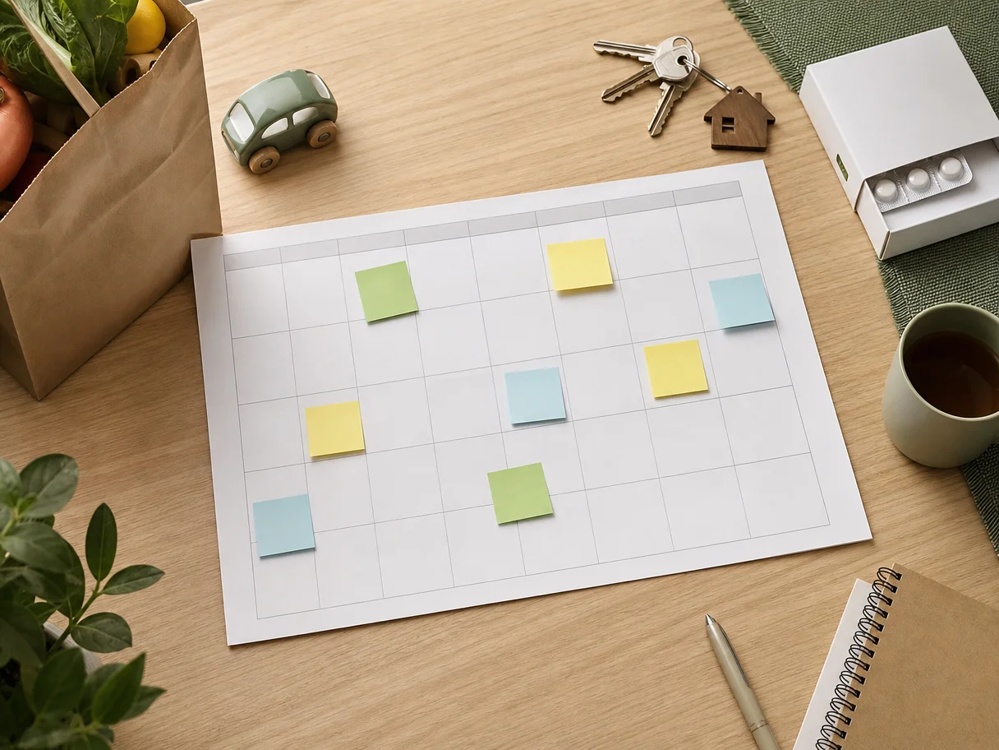

Вечером открываете приложение для учёта расходов, честно записываете продукты, такси, доставку, покупку на маркетплейсе. В конце месяца видите понятную картину: на еду ушло столько-то, на ребёнка — столько-то, на развлечения — больше, чем хотелось бы. Но утром возникает прежний вопрос: можно ли заказать куртку, записаться к врачу или оплатить подарок? И хватит ли денег до следующей зарплаты?
В этом месте многие разочаровываются в учёте расходов. Кажется, что проблема в дисциплине: надо заносить траты тщательнее, делать больше категорий, не забывать наличные. На самом деле дело часто не в дисциплине. Просто учёт и управление деньгами решают разные задачи.
Учёт отвечает на вопрос: куда деньги уже ушли? Управление помогает ответить: что с ними можно сделать дальше? Обе вещи полезны, но одна не заменяет другую.
Учёт смотрит назад, а решения приходится принимать сегодня
Представим обычную ситуацию. Зарплата пришла пятого числа. В тот же день семья платит за ипотеку или аренду, коммунальные услуги, сад или кружки, связь, страховку, часть кредита. Через неделю нужны продукты, бензин, лекарства. Ещё через несколько дней у ребёнка день рождения друга, а в машине загорается лампочка, которую лучше не игнорировать.
В приложении учёта всё это можно аккуратно отразить. К концу месяца будет видно, что машина в этот раз обошлась дорого, а доставки еды незаметно выросли. Это ценно: повторяющиеся траты становятся заметными, а деньги перестают исчезать в тумане.
Но список уже совершённых операций не говорит, что происходит с деньгами, которые лежат на счёте прямо сейчас. Среди них могут быть средства на аренду через три дня, на продукты до конца недели, на стоматолога в следующем месяце или на давно запланированный отпуск. Формально деньги есть. Фактически свободна только часть.
Вот почему баланс на карте — одна из самых обманчивых цифр в семейных финансах. Он показывает, сколько денег лежит на счёте, но не показывает, сколько из них можно потратить без последствий.
Учёт расходов объясняет прошлое. План денег защищает ближайшее будущее.
Почему категории сами по себе не дают ощущения контроля
Обычный учёт часто строится вокруг категорий: продукты, транспорт, дети, дом, кафе, одежда. Такой список помогает увидеть привычки. Например, заметить, что несколько небольших заказов еды в неделю складываются в ощутимую сумму. Но категория не всегда отвечает на вопрос о приоритете.
Допустим, в категории «одежда» осталось немного денег или вообще нет установленного лимита. При этом на карте есть сумма, которой хватает на новую пару обуви. Покупка кажется безопасной. Только через шесть дней спишется годовая подписка, а до аванса нужно купить продукты и оплатить приём у врача. Учёт может показать все эти траты позже, но не связывает их в один календарь решений.
Особенно трудно в семьях, где доходы приходят в разные даты. Один получает зарплату в начале месяца, другой — ближе к середине. Есть премии, подработки, пособия, возвраты, нерегулярные заказы. Деньги приходят не одной ровной линией, а волнами. И расходы тоже не ждут удобного момента.
Когда в такой ситуации ориентируются только на остаток, появляется знакомый цикл: после поступления денег становится легче, затем баланс тает, а перед следующей датой приходится всё откладывать и считать в голове. Даже при нормальном общем доходе это выматывает.

Планирование — это не запрет на траты
Иногда слово «бюджет» звучит как режим экономии: всё запретить, отказаться от удовольствий, подробно оправдывать каждую чашку кофе. Но рабочее планирование устроено иначе. Оно не пытается сделать жизнь идеально предсказуемой. Его задача — заранее дать деньгам работу, чтобы в момент покупки не приходилось тревожно угадывать.
Вместо одной общей суммы на счёте появляются понятные части: обязательные платежи, повседневные расходы, ближайшие планы, накопления, запас на нерегулярные вещи. Необязательно создавать двадцать пять категорий. Часто хватает нескольких крупных «корзин», которые соответствуют реальной жизни семьи.
Например, после поступления денег можно сначала отложить сумму на обязательное: жильё, платежи по кредитам, сад или школу, связь, проезд. Затем заложить продукты и бытовые покупки до следующего дохода. Отдельно оставить деньги на планы, которые уже известны: день рождения, поездку, сезонную одежду, техобслуживание машины. То, что осталось после этого, и есть более честный ориентир для спонтанных решений.
Такой подход не означает, что вы обязаны предсказать каждую покупку. Он означает, что крупные и повторяющиеся вещи перестают маскироваться под неожиданности. Подарки случаются не каждый месяц, но случаются регулярно. Зимняя одежда, врач, ремонт техники, сборы в школу, отпуск — это не обязательно авария. Если начать понемногу учитывать их заранее, один платёж перестаёт ломать весь месяц.
Что такое управление денежным потоком
Управление денежным потоком — это привычка смотреть не только на суммы, но и на время. Когда придут деньги? Какие платежи и покупки будут до следующего поступления? Какой остаток должен пережить этот промежуток?
В семье это работает примерно как календарь. Не нужно ждать, пока аренда спишется, чтобы вспомнить о ней. Не нужно считать отпуск «лишней тратой» в день оплаты, если вы откладывали на него несколько месяцев. Не нужно решать в последний вечер, чем закрыть страховку на машину, если она была в плане заранее.
Учёт остаётся частью этой системы. Он помогает уточнять план: понять, сколько на самом деле уходит на продукты, какие подписки больше не нужны, хватает ли суммы на повседневные расходы. Но направление меняется. Вы записываете траты не ради красивого отчёта, а чтобы следующий план был ближе к реальности.
Именно поэтому полезнее спрашивать не «на что мы потратили в прошлом месяце?», а «какие деньги уже обещаны до следующего дохода?». Первый вопрос помогает анализировать. Второй — принимать решение.
Как перейти от учёта к плану без сложных таблиц
Не нужно выбрасывать историю расходов и начинать финансовую жизнь с понедельника. Проще добавить к привычному учёту несколько действий.
1. Определите ближайшую точку дохода
Посмотрите, когда поступят следующие деньги: зарплата, аванс, оплата заказа, пособие. Планировать удобно не абстрактный календарный месяц, а период до этой даты. Если доходы в семье приходят по-разному, отмечайте каждое ожидаемое поступление.
2. Выпишите то, что уже нельзя считать свободными деньгами
Сюда попадут обязательные платежи и известные покупки до ближайшего дохода. Аренда, ипотека, коммунальные услуги, сад, лекарства, продукты, бензин, запланированный врач, подписки с конкретной датой списания. Не нужно искать идеальную детализацию. Нужна честная оценка того, что уже ждёт своей очереди.
3. Разделите остаток по смыслу
Часть нужна на повседневную жизнь, часть — на цель или запас, часть можно оставить гибкой. Если в семье двое взрослых, полезно обсудить эти части вместе. Не чтобы контролировать друг друга, а чтобы один и тот же остаток не был мысленно потрачен дважды.
Это особенно заметно в мелочах. Один думает: «На выходных можно заказать еду». Другой уверен: «Эти деньги пойдут на кроссовки ребёнку». Оба смотрят на один баланс, но принимают решения из разных планов. Общая картина снимает много лишних разговоров.
4. Оставьте место для обычной жизни
План, в котором нет кофе по дороге, небольших радостей, доставки в тяжёлый день или непредвиденной мелочи, быстро превращается в повод бросить его. Лучше сразу выделить посильную сумму на гибкие расходы. Тогда они не выглядят как провал, а остаются частью реальности.
5. Возвращайтесь к плану после изменений
Сломалась стиральная машина, задержали оплату, пришлось купить лекарства — не ругайте себя за то, что первоначальный план не выдержал. План нужен именно затем, чтобы его корректировать. Посмотрите, что изменилось, какие ближайшие расходы теперь важнее и какую часть денег можно переназначить.
Это отличается от привычного «посмотрим в конце месяца». Чем раньше вы видите изменение, тем больше вариантов остаётся: перенести необязательную покупку, уменьшить расходы на неделю, использовать заранее отложенный запас, договориться в семье о новом плане.
Какие ошибки мешают почувствовать разницу
Первая — пытаться вести учёт идеально. Если на внесение каждой покупки уходит много сил, система быстро надоедает. Достаточно точности, которая помогает принимать решения. Мелкие расходы можно объединять, а категории не дробить без необходимости.
Вторая — планировать только регулярные платежи. Тогда каждый сезонный расход кажется внезапным. Полезно раз в несколько месяцев просматривать календарь вперёд и вспоминать о том, что обычно происходит: дни рождения, страховки, отпуск, обслуживание машины, школьные сборы.
Третья — считать накопления тем, что останется в конце месяца. Обычно в конце уже остаётся мало не потому, что семья безответственно тратит, а потому, что у денег не было отдельного назначения. Даже небольшая заранее запланированная сумма работает надёжнее, чем надежда на случайный остаток.
Когда цифры начинают успокаивать, а не давить
Цель не в том, чтобы жить под постоянным финансовым контролем. Наоборот, понятный план уменьшает количество мыслей о деньгах. Вы знаете, что продукты до следующего дохода учтены. Понимаете, почему сейчас лучше отложить покупку или почему её можно сделать без чувства вины. Видите, как отпуск или замена телефона постепенно становятся реальными, а не конкурируют с коммунальными платежами в последний момент.
Для этого не обязательно строить сложную таблицу. Можно начать с заметки, календаря и нескольких сумм. А если хочется видеть доходы, ближайшие платежи, цели и доступный остаток в одной картине, такой подход удобно собрать в сервисе «Семейный поток».
Учёт расходов не бесполезен. Он даёт материал для наблюдений. Но спокойствие появляется в тот момент, когда прошлые траты превращаются в план на ближайшие дни и недели. Не «куда всё ушло», а «что мы можем себе позволить сейчас и что уже ждёт своих денег».